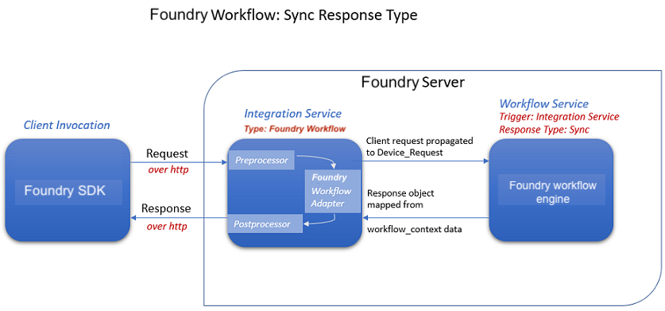
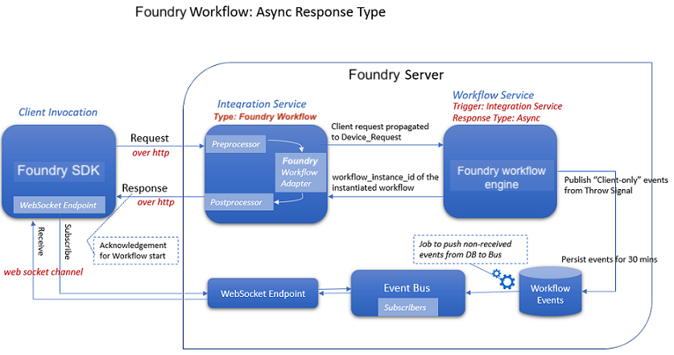

Foundry Workflow Adapter
Foundry Workflow Adapter
From V9 SP3, the new Foundry Workflow adapter (integration service) has been introduced in VoltMX Foundry.
From V9 SP3, a new type of Foundry workflow has been introduced called “Integration Service” trigger type. This workflow type helps to visually create service orchestrations and then map them to an Integration service endpoint. This results in exposing Foundry workflows as API endpoints that can be invoked by clients or other backends without linking them to object models. In order to facilitate this, the new Foundry Workflow adapter has also been introduced as one of the Integration connectors.
Using the Foundry Workflow adapter, you can map Integration Trigger Workflows to an operation and invoke them directly as endpoints from external clients. The integration service when invoked then passes the request handling to workflow engine along with the Request Input. The Request Input is propagated as “Device_Request” scope to the workflow. Foundry then executes the workflow and responds back to the invoking integration service with an output response as mapped in the workflow designer. The integration service finally responds back to the clients with httpstatus, opstatus, workflow instance id and response output similar to all integration service invocations.
The following flow diagram details how the Sync Workflow works:

The following flow diagram details how the Async Workflow works:

For more information on how to create Integration ](Sync/Async) Workflows, refer to the Integration Service Trigger Workflow.
Prerequisites
- One or more Integration triggered Workflow Services should be created.
Configuring a Foundry Workflow Adapter involves the following steps:
- How to Configure Service Definition for Foundry Workflow Adapter
- How to Create and Configure Operations for the Foundry Workflow Adapter
How to Configure Service Definition for Foundry Workflow Adapter
To configure a Foundry Workflow adapter in the Integration Service Definition tab, follow these steps:
- In the Name field, provide a unique name for your service. When you enter the name, the name is updated for the active service under the Services section in the left pane.
- From the Service Type list, select
Foundry Workflow. -
In the Authentication section, you can select an identity provider from Use Existing Identity Provider. This drop-down lists the identity providers created on the Identity page. If you select any identity provider, you have to enter valid login credentials.
The Authentication section is optional.
For more information on Externalizing Identity Services, refer to Replace the Identity Service references in a Foundry app.
-
For additional configuration of your service definition, provide the following details in the Advanced section.
Field Description Custom code To specify a JAR associated to the service, select one from the Select Existing JAR drop-down menu or click Upload New to add a new JAR file. Make sure that you upload a custom JAR file that is built on the same JDK version used for installing Foundry Integration.
For example, if the JDK version on the machine where Foundry Integration is installed is 1.6, you must use the same JDK version to build your custom jar files. If the JDK version is different, an unsupported class version error will appear when a service is used from a device.
API Throttling If you want to use API throttling in Foundry Console, to limit the number of request calls within a minute, do the following:
In the Total Rate Limit text box, enter a required value. This will limit the total number of requests processed by this API.
In the Rate Limit Per IP field, enter a required value. With this value, you can limit the number of IP address requests configured in your Foundry console in terms of Per IP Rate Limit.
NOTE: In case of On-premises, the number of nodes in a clustered environment is set by configuring the
VOLTMX_SERVER_NUMBER_OF_NODESproperty in the Admin Console. This property indicates the number of nodes configured in the cluster. The default value is 1.
Refer to The Runtime Configuration tab on the Settings screen of App Services.
The total limit set in the Foundry Console will be divided by the number of configured nodes. For example, a throttling limit of 600 requests/minute with three nodes will be calculated to be 200 requests/minute per node.
This is applicable for Cloud and On-premises.
All options in the Advanced section are optional. -
Enter the Description for the service.
- Click SAVE to save your service definition. The Operations List tab appears only after the service definition is saved. The following section details how to create operations.
How to Create and Configure Operations in Foundry Workflow Adapter
To create an operation, follow these steps:
- Click SAVE & ADD OPERATION in your service definition page to save your service definition and display the Operations List tab for adding operations.
-
From the ADD OPERATION, expand the Select Operations list and select check boxes for the available operations.
This list displays all the Integration Workflows linked to the App. Otherwise, displays the message There are no Integration Workflows linked to the App.
The default name format of operations are as per the Integration Workflows, for example
<IntegrationWorkflowServicenName>. -
Click ADD OPERATION. The new operations are created under Configured Operations section.

-
Operation names are auto-generated in the default name format. You can change the operation name if required.
-
To configure an operation: Once you create operations for Foundry Workflow adapter, you can configure the operations such as configuring advanced configurations, adding test values, and fetching the response.
To edit an operation, you can also click the operation from the service tree pane.
The system displays the selected operation in the edit mode. Provide the following details to configure the operation.
Fields Description Name The Name field is pre-populated with field names of the selected operation. You can edit this field. Operation Security Level It specifies how a client must authenticate to invoke this operation.
Select one of the following security operations in the Operation Security Level field.
- Authenticated App User – It restricts the access to clients who have successfully authenticated using an Identity Service associated with the app.
- Anonymous App User – It allows the access from trusted clients that have the required App Key and App Secret. Authentication through an Identity Service is not required.
- Public – It allows any client to invoke this operation without any authentication. This setting does not provide any security to invoke this operation and you should avoid this authentication type if possible.
- Private - It blocks the access to this operation from any external client. It allows invocation either from an Orchestration/Object Service, or from the custom code in the same run-time environment.
NOTE: The field is set to Authenticated App User, by default.
Front End HTTP Method The Front End HTTP Method specifies the HTTP method that is used to invoke the Service operation from an HTTP Client. Iris and Other SDKs use POST method for communicating with Foundry. Associated Workflow The Name field is pre-populated with workflow names. You cannot edit this field. -
For additional configuration of request or response operations, provide the following details in the Advanced section.
Custom Code Invocation You can add pre and post processing logic to services to modify the request inputs. When you test, the services details of various stages in the service execution are presented to you for better debugging. All options in the Advanced section are optional. For more details, refer to Preprocessor and Postprocessor. Additional Configuration Properties Additional Configuration Properties allows you to configure service call time out cache response. For information on different types of configuration properties, refer Properties. Front-end API Front-end API allows you map your endpoint ](or) backend URL of an operation to a front-end URL. For detailed information, refer Custom Front-end URL. Server Events Using Server Events you can configure this service to trigger or process server side events. For detailed information, refer Server Events. All options in the Advanced section for operations are optional.
-
Enter the Description for the operation.
-
After you create operations, you can configure the request and response parameters.
-
Click SAVE OPERATION.